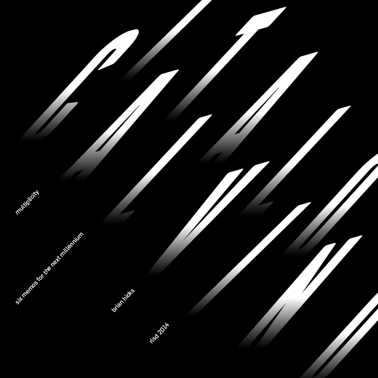
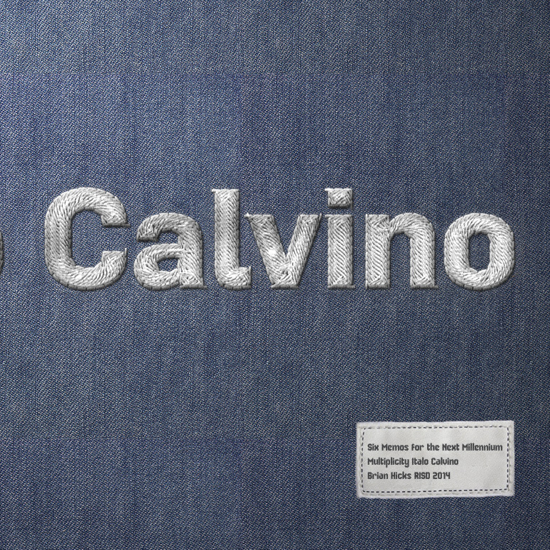
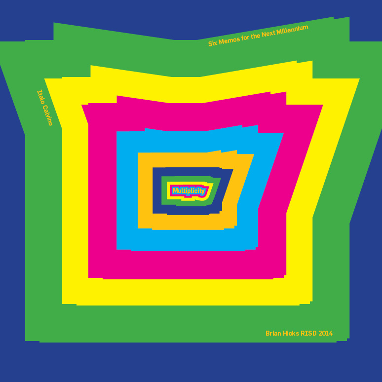
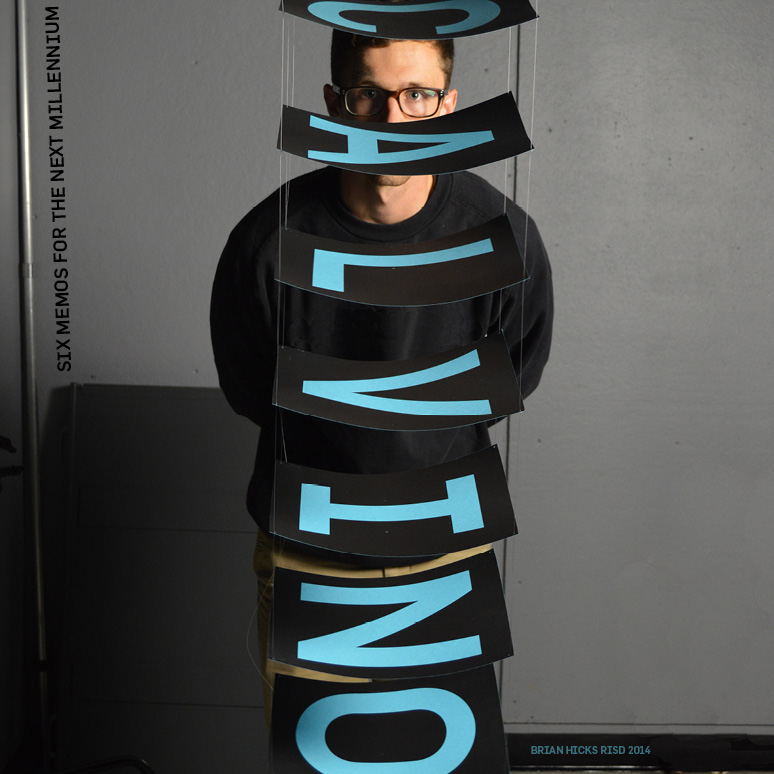

Calvino Compositions
Description
Credits
2014. RISD. Type 3.
Description
Typographic studies based off of the chapter, Multiplicity, in Italo Calvino’s Six Memos for the Next Generation.
A major focus of this project was to express a large idea with type and to be able to realate the smaller details back to the overall idea.
For example, in the composition where the word Calvino is stitched into denim and the supporting information appears on a tag.
Credits
2014. RISD. Type 3.